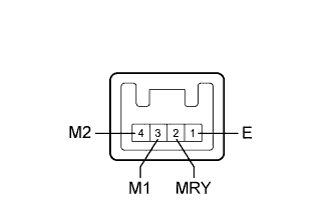

СИСТЕМА ПЕРЕДНИХ СИДЕНИЙ С ЭЛЕКТРОПРИВОДОМ (для моделей с запоминающим устройством) > Положение сиденья с электроприводом не сохраняется в памяти |
| 1.ПРОВЕРЬТЕ ФУНКЦИЮ УПРАВЛЕНИЯ ЭЛЕКТРОПРИВОДОМ ПЕРЕДНИХ СИДЕНИЙ |
С помощью переключателей электропривода передних сидений удостоверьтесь, что все функции электропривода сидений работают нормально.
|
| ||||
| OK | |
| 2.СНИМИТЕ ПОКАЗАНИЯ ПОРТАТИВНОГО ДИАГНОСТИЧЕСКОГО ПРИБОРА (ДЛЯ ЗАПОМИНАЮЩЕГО УСТРОЙСТВА СИДЕНЬЯ) |
Сохраните положение сиденья с помощью переключателя запоминающего устройства сиденья (Нажмите здесь).
Считайте данные в режиме "Data List" портативного диагностического прибора (Нажмите здесь).
| Информация на дисплее прибора | Измеряемая величина / диапазон измерения | Нормальное состояние | Замечание по диагностике |
| Seat Memory No1 | Положение сиденья, сохраненное в памяти посредством переключателя M1 / Mem или Not Mem | Mem: Положение сохранено в памяти Not Mem: положение не сохранено в памяти | - |
| Seat Memory No2 | Положение сиденья, сохраненное в памяти посредством переключателя M2 / Mem или Not Mem | Mem: Положение сохранено в памяти Not Mem: положение не сохранено в памяти | - |
|
| ||||
| OK | ||
| ||
| 3.СНИМИТЕ ПОКАЗАНИЯ ПОРТАТИВНОГО ДИАГНОСТИЧЕСКОГО ПРИБОРА (ДЛЯ ПЕРЕКЛЮЧАТЕЛЯ ЗАПОМИНАЮЩЕГО УСТРОЙСТВА СИДЕНЬЯ) |
Считайте данные в режиме Data List портативного диагностического прибора (Нажмите здесь).
| Информация на дисплее прибора | Измеряемая величина / диапазон измерения | Нормальное состояние | Замечание по диагностике |
| M1 Switch | Сигнал переключателя запоминающего устройства сиденья M1 / ON (ВКЛ) или OFF (ВЫКЛ) | ON (ВКЛ): Переключатель запоманающего устройства сиденья M1 - ON (ВКЛ) OFF (ВЫКЛ): Переключатель запоманающего устройства сиденья M1 - OFF (ВЫКЛ) | - |
| M2 Switch | Переключатель запоминающего устройства сиденья M2 / ON (ВКЛ) или OFF (ВЫКЛ) | ON (ВКЛ): Переключатель запоманающего устройства сиденья M2 - ON (ВКЛ) OFF (ВЫКЛ): Переключатель запоманающего устройства сиденья M2 - OFF (ВЫКЛ) | - |
| SET Switch | Сигнал переключателя запоманающего устройства сиденья SET ON (ВКЛ) или OFF (ВЫКЛ) | ON (ВКЛ): Переключатель запоманающего устройства сиденья SET - ON (ВКЛ) OFF (ВЫКЛ): Переключатель запоманающего устройства сиденья SET - OFF (ВЫКЛ) | - |
|
| ||||
| OK | |
| 4.ПРОВЕРЬТЕ РАБОТУ ПЕРЕКЛЮЧАТЕЛЯ ЭЛЕКТРОПРИВОДА ПЕРЕДНЕГО СИДЕНЬЯ |
Замените переключатель электропривода переднего сиденья новым или заведомо исправным.
Сохраните положение сиденья с помощью переключателя запоминающего устройства сиденья (Нажмите здесь).
Проверьте параметры сиденья водителя в режиме Data List и убедитесь, что сохранение в памяти выполнено должным образом.
|
| ||||
| OK | ||
| ||
| 5.ПРОВЕРЬТЕ ПЕРЕКЛЮЧАТЕЛЬ ЗАПОМИНАЮЩЕГО УСТРОЙСТВА СИДЕНЬЯ |
|  |
Снимите переключатель запоминающего устройства сиденья (Нажмите здесь).
Измерьте сопротивление в соответствии со значениями, приведенными в таблице ниже.
| Контакты для подключения диагностического прибора | Положение переключателя | Заданные условия |
| 3 (M1) - 1 (E) | Нажат переключатель запоминающего устройства сиденья M1 | Менее 1 Ом |
| 4 (M2) - 1 (E) | Нажат переключатель запоминающего устройства сиденья M2 | Менее 1 Ом |
| 2 (MRY) - 1 (E) | Нажат переключатель запоминающего устройства сиденья SET | Менее 1 Ом |
|
| ||||
| OK | |
| 6.ПРОВЕРЬТЕ ЖГУТ ПРОВОДОВ И РАЗЪЕМ (ПЕРЕКЛЮЧАТЕЛЬ ЗАПОМИНАЮЩЕГО УСТРОЙСТВА СИДЕНЬЯ - ГЛАВНЫЙ ЭБУ КУЗОВА И МАССА) |
Отсоедините разъем K9*1 или J10*2 переключателя.
Отсоедините разъем G63 ЭБУ.
Измерьте сопротивление в соответствии со значениями, приведенными в таблице ниже.
| Контакты для подключения диагностического прибора | Условие | Заданные условия |
| G63-25 (M1) - K9-3 (M1) | Всегда | Менее 1 Ом |
| G63-27 (M2) - K9-4 (M2) | Всегда | Менее 1 Ом |
| G63-26 (MM) - K9-2 (MRY) | Всегда | Менее 1 Ом |
| K9-1 (Е) - масса | Всегда | Менее 1 Ом |
| G63-25 (M1) - масса | Всегда | 10 кОм или более |
| G63-27 (M2) - масса | Всегда | 10 кОм или более |
| G63-26 (MM) - масса | Всегда | 10 кОм или более |
| Контакты для подключения диагностического прибора | Условие | Заданные условия |
| G63-25 (M1) - J10-3 (M1) | Всегда | Менее 1 Ом |
| G63-27 (M2) - J10-4 (M2) | Всегда | Менее 1 Ом |
| G63-26 (MM) - J10-2 (MRY) | Всегда | Менее 1 Ом |
| J10-1 (E) - масса | Всегда | Менее 1 Ом |
| G63-25 (M1) - масса | Всегда | 10 кОм или более |
| G63-27 (M2) - масса | Всегда | 10 кОм или более |
| G63-26 (MM) - масса | Всегда | 10 кОм или более |
|
| ||||
| OK | ||
| ||